المكتب الإسلامي
Publisher
Resources
 كلمة الإخلاص وتحقيق معناها- ط 4
كلمة الإخلاص وتحقيق معناها- ط 4
الحافظ ابن رجب الحنبلي
كلمة الإخلاص وتحقيق معناها- ط 4
كلمة الإخلاص وتحقيق معناها- ط 4
الحافظ ابن رجب الحنبلي
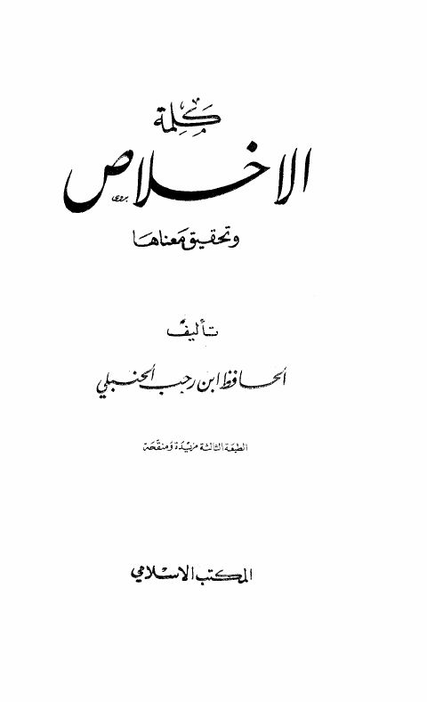
كلمة الإخلاص وتحقيق معناها- المكتب الإسلامي كلمة الإخلاص وتحقيق معناها- المكتب الإسلامي الحافظ ابن رجب الحنبلي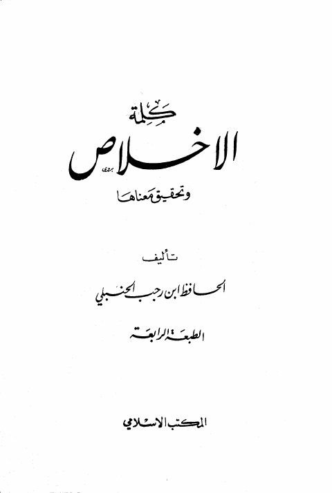
كلمة الإخلاص وتحقيق معناها- ط 5 كلمة الإخلاص وتحقيق معناها- ط 5 الحافظ ابن رجب الحنبلي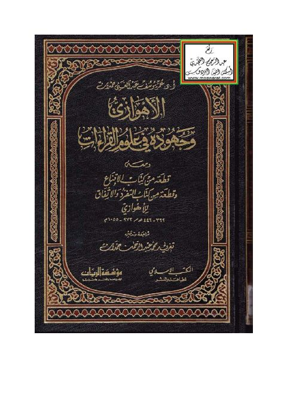
الأهوازي وجهوده في علوم القراءات ومعه قطعة من كتاب الإقناع وقطعة من كتاب التفرد والاتفاق للأهوازي الأهوازي وجهوده في علوم القراءات ومعه قطعة من كتاب الإقناع وقطعة من كتاب التفرد والاتفاق للأهوازي عمر يوسف عبد الغني حمدان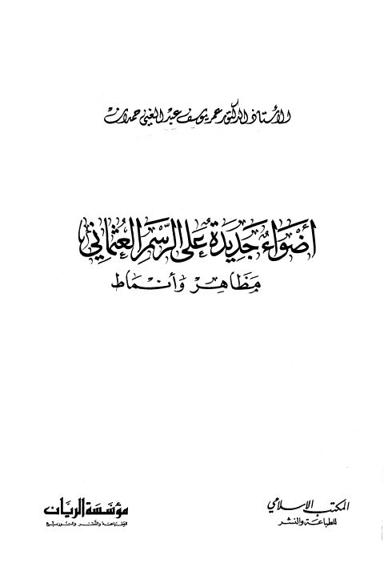
أضواء جديدة على الرسم العثماني مظاهر وأنماط أضواء جديدة على الرسم العثماني مظاهر وأنماط عمر يوسف عبد الغني حمدان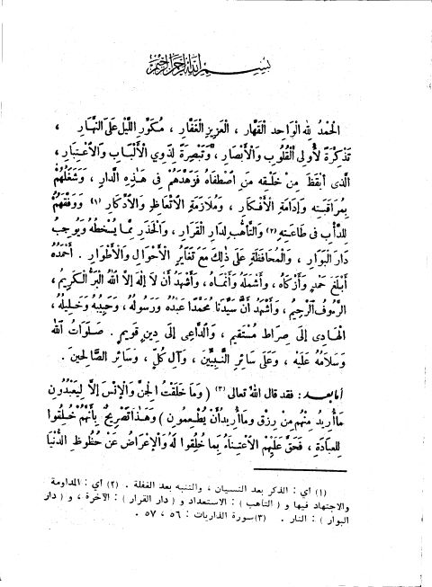
رياض الصالحين- ت. الألباني رياض الصالحين- ت. الألباني يحيى بن شرف النووي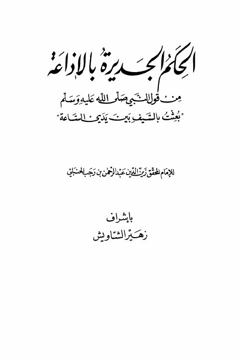
الحكم الجديرة بالإذاعة من قول النبي بعثت بالسيف بين يدي الساعة الحكم الجديرة بالإذاعة من قول النبي بعثت بالسيف بين يدي الساعة عبد الرحمن البغدادي بن رجب الحنبلي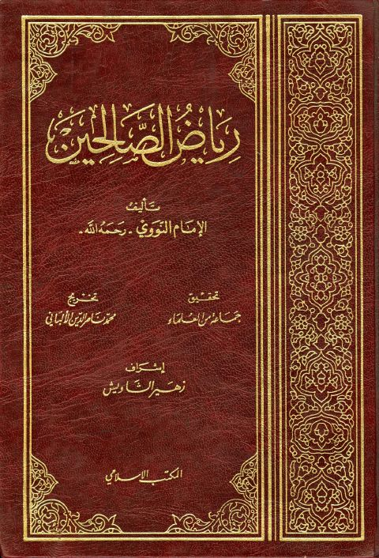
رياض الصالحين- المكتب الإسلامي رياض الصالحين- المكتب الإسلامي يحيى بن شرف النووي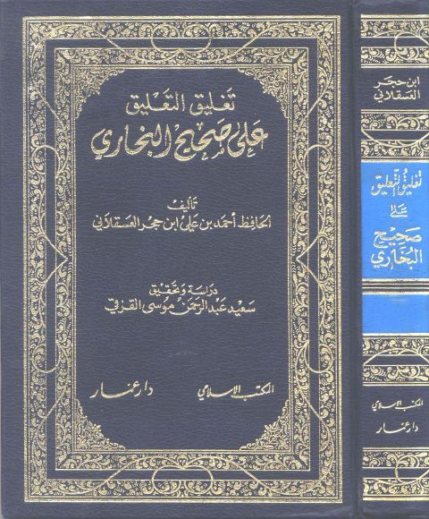
تغليق التعليق على صحيح البخاري تغليق التعليق على صحيح البخاري أحمد بن علي بن حجر العسقلاني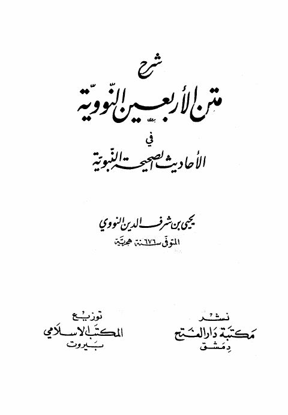
شرح متن الأربعين النووية في الأحاديث الصحيحة النبوية شرح متن الأربعين النووية في الأحاديث الصحيحة النبوية يحيى بن شرف النووي تحفة الأشراف بمعرفة الأطراف للحافظ يوسف بن عبد الرحمن المزي مع النكت الظراف على الأطراف تعليقات ابن حجر العسقلاني
تحفة الأشراف بمعرفة الأطراف للحافظ يوسف بن عبد الرحمن المزي مع النكت الظراف على الأطراف تعليقات ابن حجر العسقلاني
أحمد بن علي بن حجر العسقلاني
تحفة الأشراف بمعرفة الأطراف للحافظ يوسف بن عبد الرحمن المزي مع النكت الظراف على الأطراف تعليقات ابن حجر العسقلاني
تحفة الأشراف بمعرفة الأطراف للحافظ يوسف بن عبد الرحمن المزي مع النكت الظراف على الأطراف تعليقات ابن حجر العسقلاني
أحمد بن علي بن حجر العسقلاني
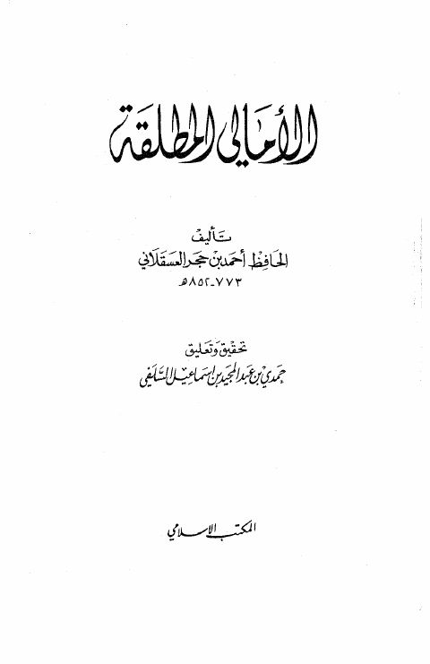
الأمالي المطلقة الأمالي المطلقة أحمد بن علي بن حجر العسقلاني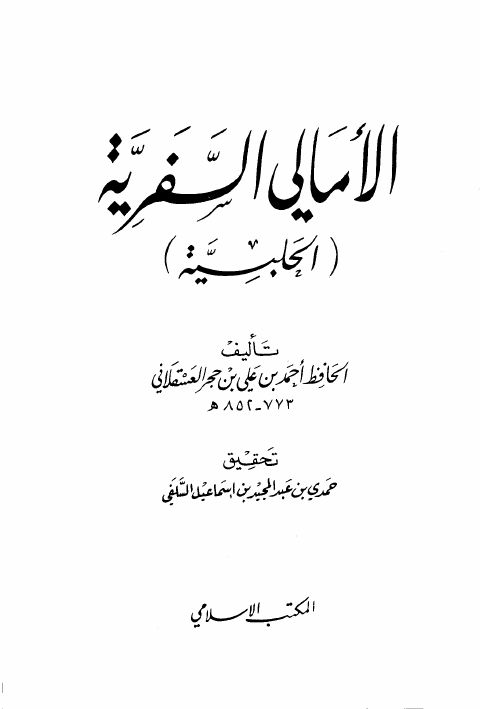
الأمالي السفرية الحلبية- المكتب الإسلامي الأمالي السفرية الحلبية- المكتب الإسلامي أحمد بن علي بن حجر العسقلاني رياض الصالحين
رياض الصالحين
يحيى بن شرف النووي
رياض الصالحين
رياض الصالحين
يحيى بن شرف النووي
 روضة الطالبين وعمدة المفتين
روضة الطالبين وعمدة المفتين
يحيى بن شرف النووي
روضة الطالبين وعمدة المفتين
روضة الطالبين وعمدة المفتين
يحيى بن شرف النووي
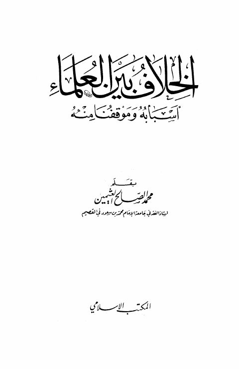
الخلاف بين العلماء أسبابه وموقفنا منه الخلاف بين العلماء أسبابه وموقفنا منه محمد بن صالح العثيمين